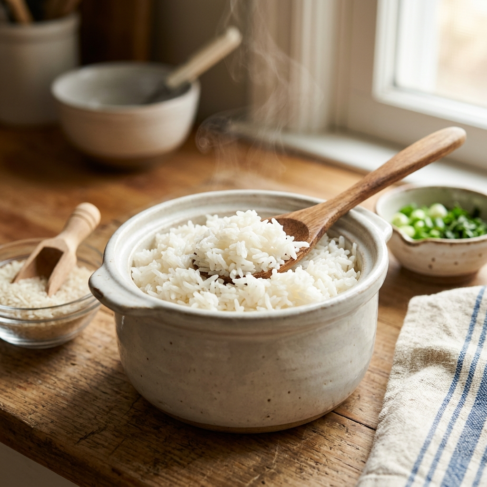

Vamos aprender o básico da cozinha
Bem-vindos a aprender o básico na cozinha!
Para a primeira receita teremos: Arroz soltinho
Para fazer um arroz branco simples e soltinho, use 1 xícara de arroz, 2 xícaras de água fervente, 1 colher de sopa de óleo ou azeite, meia cebola picada, 1 dente de alho amassado e sal a gosto.
Ingredientes e Proporção
- 1 xícara (chá) de arroz branco
- 2 xícaras (chá) de água quente ou fervente
- 1 colher (sopa) de óleo ou azeite
- 1/2 cebola pequena picada
- 1 dente de alho picado ou amassado
- Sal a gosto
Modo de Preparo:
- Aqueça o óleo: Coloque o óleo ou azeite em uma panela em fogo médio.
- Refogue os temperos: Adicione a cebola picada e deixe murchar. Acrescente o alho e mexa por alguns segundos até perfumar.
- Frite o arroz: Junte o arroz cru e o sal. Refogue bem por cerca de 1 minuto até os grãos ficarem levemente brilhantes.
- Adicione a água: Despeje a água fervente com cuidado. Misture levemente para espalhar o sal.
- Cozinhe: Deixe a panela tampada apenas parcialmente em fogo médio para baixo.
- Aguarde secar: Cozinhe por cerca de 15 a 18 minutos, até que a água seque e atinja o nível do arroz.
- Descanse: Desligue o fogo, tampe a panela por completo e deixe o arroz descansar por 5 minutos para terminar de cozinhar no vapor. Solte com um garfo antes de servir.